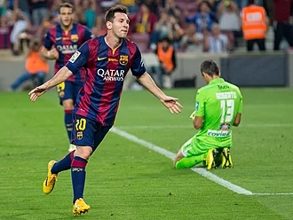

.png)
.png)
.png)

2016–18: Domestic double and a record fifth Golden Boot

Messi opened the 2017–18 season by converting a penalty in Barcelona's 1–3 first leg home defeat to Real Madrid in Supercopa de España.[224] Thereby, Messi also extended his El Clásico goalscoring record with the goal being his 24th official and 25th overall.[225] On 9 September, Messi scored his first hat-trick of the 2017–18 league campaign, against Espanyol in Derbi barceloní, thus helping to secure a 5–0 home victory for Blaugrana over local rivals.[226] Messi netted twice against Gianluigi Buffon, on 12 September, as Barça defeated the last season's Italian champions Juventus 3–0 at home in the UEFA Champions League.[227] On 19 September, Messi found the net four times in a 6–1 trashing of Eibar at the Camp Nou in La Liga.[228] Three weeks later, on 1 October, Messi surpassed his former teammate Carles Puyol to become the third highest appearance maker in the club's history, as he helped Barça defeat Las Palmas 3–0 by assisting Sergio Busquets' opener and later adding two himself in his 594th official game for the club; the league game was played behind closed doors at the Camp Nou due to violence in Catalonia relating to an ongoing independence referendum.[229]
On 18 October, in his 122nd European club appearance, Messi scored his 97th UEFA Champions League goal, and his 100th in all UEFA club competitions, in a 3–1 home victory over Olympiacos.[230] Messi became only the second player after Cristiano Ronaldo to reach this century milestone, but accomplished it in 21 fewer appearances than the Portuguese counterpart.[231] On 4 November, he made his 600th appearance for Barcelona in a 2–1 home win over Sevilla in La Liga.[232] Following the reception of his fourth Golden Boot, Messi signed a new deal with Barcelona on 25 November, keeping him with the club through the 2020–21 season. His buyout clause was set at €700 million.[233] On 7 January 2018, Messi made his 400th La Liga appearance with Barcelona in a 3–0 home win over Levante, marking the occasion with his 144th league assist and 365th league goal for the club, the latter of which saw him equal Gerd Müller's record for the most league goals scored for the same club in one of Europe's top five divisions.[234] A week later, he broke the record, scoring his 366th La Liga goal from a free kick in a 4–2 away win against Real Sociedad.[234]
On 4 March, he scored his 600th senior career goal from a free kick in a 1–0 home win over Atlético Madrid, in La Liga.[235] On 14 March, Messi scored his 99th and 100th Champions League goals in a 3–0 home win over Chelsea, becoming only the second player after Cristiano Ronaldo to reach this landmark, in fewer appearances, at a younger age and having taken fewer shots than his Portuguese counterpart.[236] His opening goal, which came after only two minutes and eight seconds, was also the fastest of his career, as Barcelona advanced to the quarter-finals of the competition for the eleventh consecutive season.[237] On 7 April, he scored a hat-trick in a 3–1 win over Leganés including his sixth goal scored from a free-kick for the season, matching the record set by former teammate Ronaldinho.[238] He once again finished the season as the top scorer in La Liga, with 34 goals, which also saw him win his fifth Golden Shoe award.[239] On 21 April, Messi scored Barcelona's second goal – his 40th of the season – in a 5–0 win over Sevilla in the 2018 Copa del Rey final, later also setting up Suárez's second goal; this was Barcelona's fourth consecutive title and their 30th overall.[240] On 29 April, Messi scored a hat-trick in a 4–2 away win over Deportivo de La Coruña, which saw Barcelona claim their 25th league title.[241] On 9 May, Messi scored as Barcelona defeated Villarreal 5–1 to set the longest unbeaten streak (43 games) in La Liga history.[242]